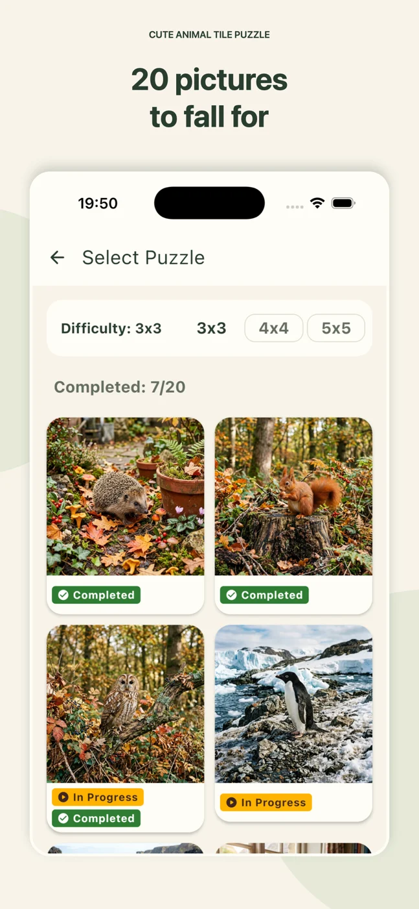
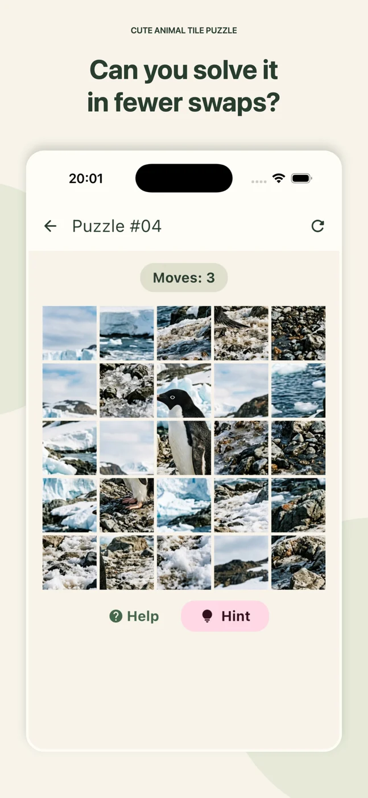

Android & iOS
Cute Animal Tile Puzzle
Piece together
a little happiness.
Swap tiles, discover cute animals and take a puzzle break at your own pace.

01
Meet 20 cute animals
Choose a picture and put each little face back together.
02
Find your level
Pick a 3×3, 4×4 or 5×5 board for a quick break or a bigger challenge.
03
Take your time
There is no timer. Relax, or see how few moves you need.
TAKE A LOOK AROUND
A little preview.


Good to know.
Do tiles have to be next to each other?
No. You can swap any two tiles to rebuild the picture.
Is there a time limit?
No. Play at your own pace on any of the three board sizes.
Where can I read the privacy policy?
A REAL PERSON, ON THE OTHER SIDE
Need a hand?
Questions, ideas or something not working? Write to me.
Include the app name, your device and what happened.